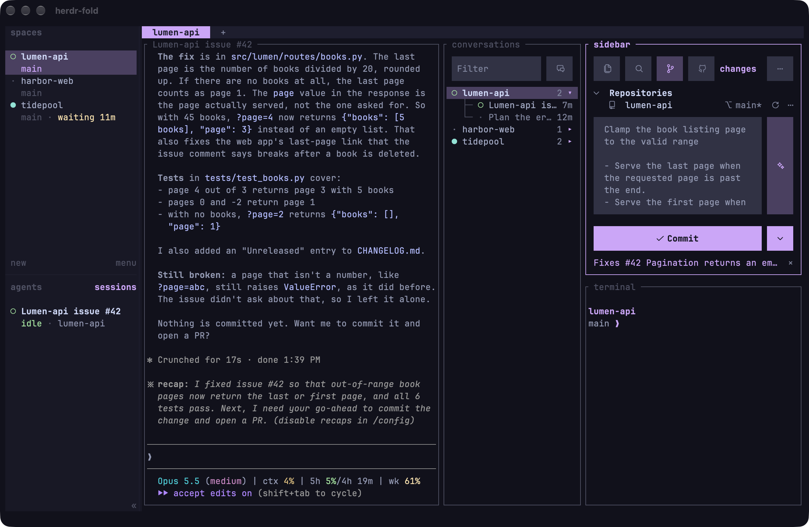
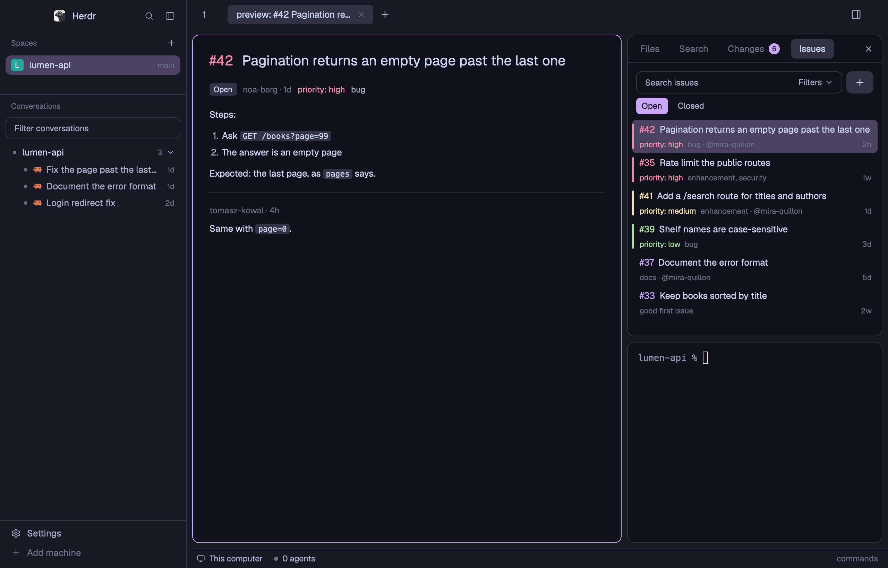

The TUI, the Herdr app, or both
Answer in the terminal: 1, 2, or 3 for both, side by side in one theme.
1
The TUI
herdr in Ghostty
installed

2
The Herdr app
herdr's desktop app
installed
on this Mac
